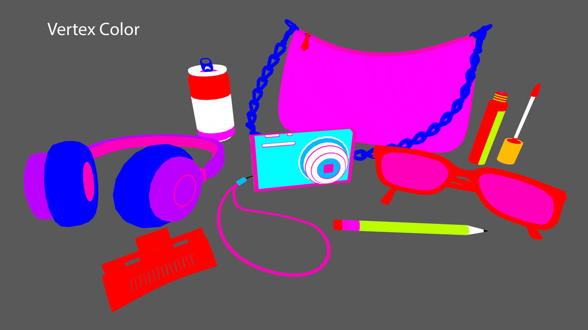
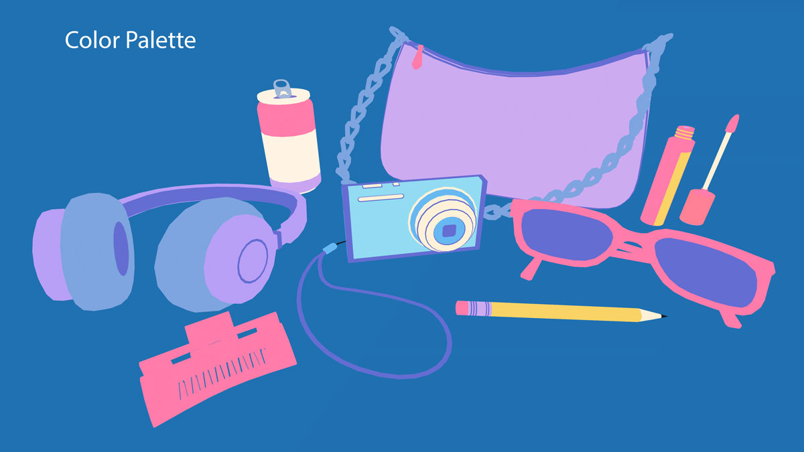

Risograph Shader
This effect is inspired by risograph printing, a stencil, spot-color based method of printing. This shader mimics the way limited colors are used and mixed together to create harmonious color palettes as well as the dotted texture distinctive of risograph printing. To mimic the effect of the small imperfections of the stencil printing, there is also an added outline effect.
The colors of the models are all assigned by vertex color. For each vertex color, there is a corresponding color, allowing the entire scene to just use 1 material. This also allows for flexibility in the engine to quickly create multiple color palettes!


Only 6 colors plus white and black are exposed in the material settings. The other 6 colors are generated by mixing the selected colors, similar to how a limited range of ink colors are mixed to produce new colors in risograph printing. The shader uses a variety of blend modes to mix the colors instead of just multiplying or adding them in order to actually get new colors. The blend modes for this shader were selected by just experimenting with which one gave the best result depending on the colors that are being mixed.
If this shader was actually being used in a game, I would prefer to pre-calculate these colors and mixes then feed them into the shader, since once the colors are selected, they aren’t changed later in the shader. As well, the type of blend mode for each mix could be exposed to make it easier to fine-tine future color palettes.
Since assigning the color is by vertex, it would have to follow the geometry so for areas that need more detail, there is an option to override the vertex color with a texture. The masking is set in the alpha channel of the texture, since most parts of the mesh don’t even need to be unwrapped as the colors are just controlled by vertex color. While creating the texture, I just made sure to use the same colors as the color palette when creating the texture so it is consistent with the rest of the scene.
The dots texture was generated using Substance Designer, with varying brightness so the amount of dots can later be controlled in the shader by subtracting a value of 0-1.These dots are then used in both the shadows and the texture.
I looked at this reference to project the texture from screenspace but locked onto the object. This gets rid of the distracting effect of the texture moving when the camera or object moves.
The lighting is just a simple N.L calculation run through a step so there are areas of either shadow or light. Blend more are used again to determine the color of the shadow instead of just multiplying with grey to mimic how real life pigment blends together, keeping the level of saturation instead of just getting darker.
The screenspace dots are then layered on top of the shadowed areas. The amount of dots can be adjusted here but subtracting a value of 0-1 from the dot texture. This is why the texture has dots in a variety of brightness instead of only all white dots.
The screenspace dots are layered again over the light areas and set to be the same color as the background. This mimics possible imperfections in the printing process where the color of the paper shows through the inked areas. The amount of dots can be controlled here as well, and is set to show less dots, so the effect is more subtle than the shadowed dots.
To mimic the look of imperfections while printing with stencils in risograph printing, there is also an outline effect. The outline meshes are made by hand in Blender instead of through the shader. Although this results in more work in the modelling stage, it allows more control of the outline shape as well as an opportunity to create a more optimized version of the model. I warped and offset parts of the outline mesh, so it wasn’t a perfect outline around the colored mesh.
Since creating the outline through a shader duplicates the geometry anyways, this method is not any more performance heavy, just a more manual process. The shader is just a simple cull-front shader and set to the same color as “white” in the color palette.